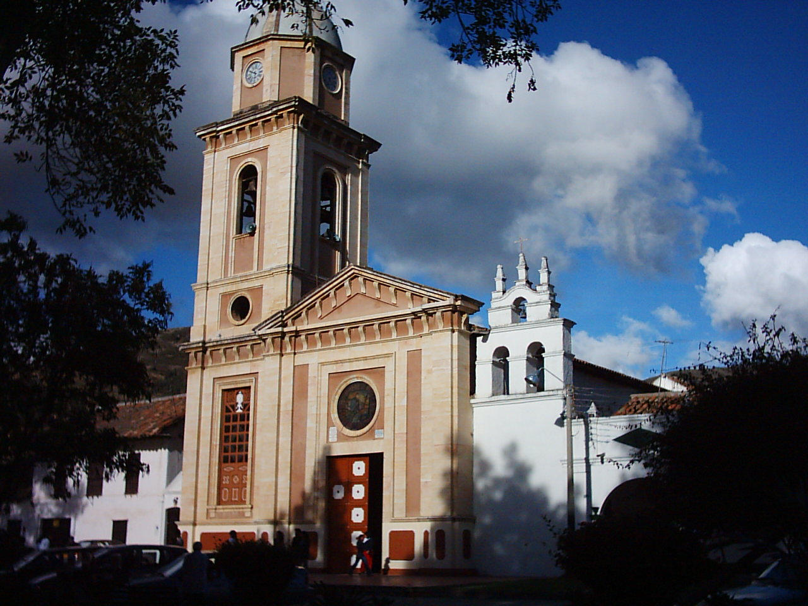
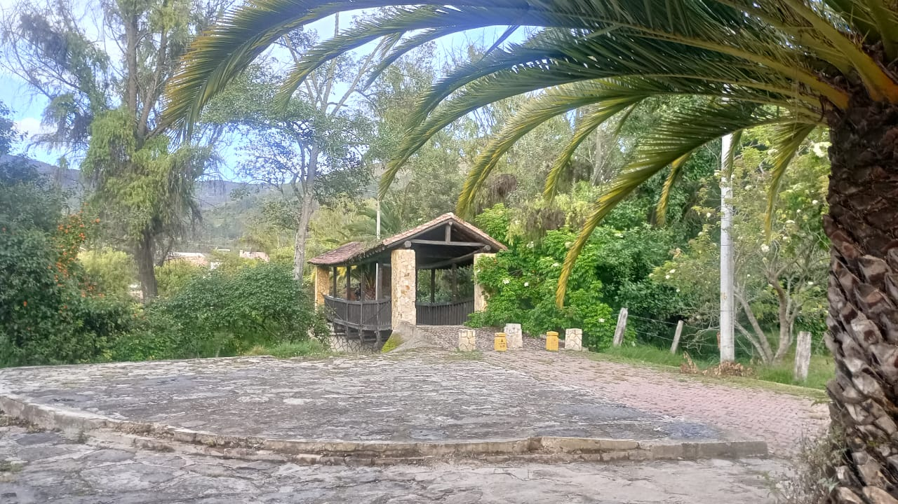

Reseña historica:
Iza, cuyo nombre proviene del vocablo chibcha “Za” (noche), también interpretado como “Tierra de curación”, es un antiguo poblado muisca fundado por los españoles en 1595 por Rodrigo Egas de Guzmán. Fue llamado “Nido Verde de Boyacá” por Manuel Ancízar en 1850, debido a su exuberante vegetación.

